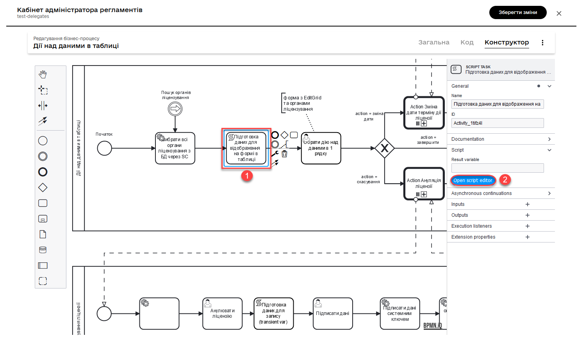
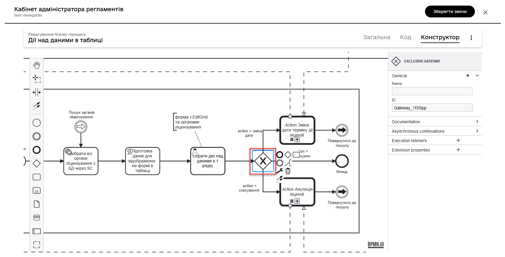
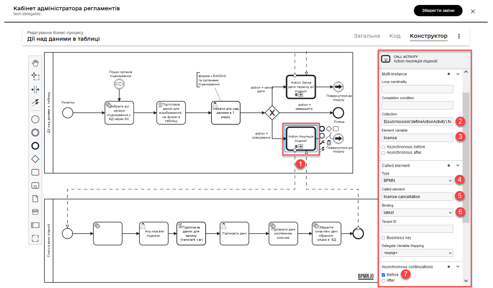
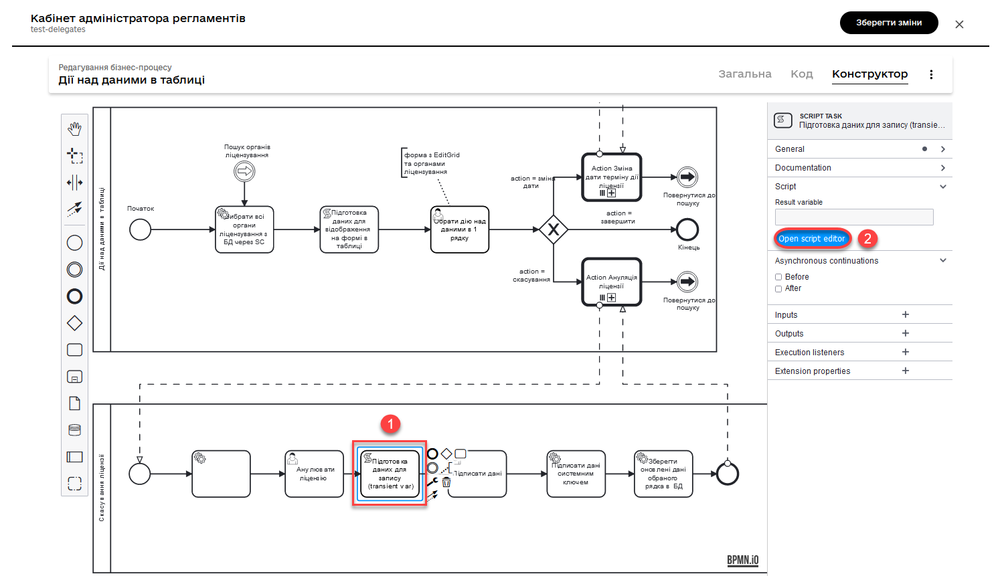
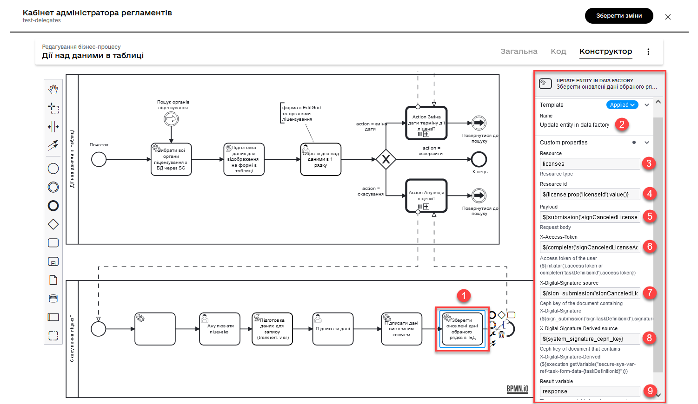
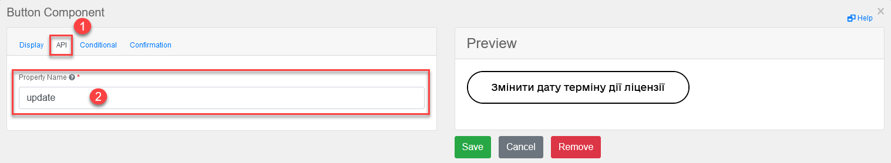

Вибір та виконання дій з одного чи декількох рядків у таблиці
- 1. Моделювання структур даних
- 2. Референтний бізнес-процес
- 2.1. Створення пулів для процесів
- 2.2. Вибір усіх органів ліцензування з БД через критерій пошуку
- 2.3. Скрипт підготовки даних для відображення на формі у табличному вигляді
- 2.4. Обрання дії над даними в одному рядку таблиці
- 2.5. Моделювання XOR-шлюзу та додавання логіки через вирази умови
- 2.6. Call Activity для виклику підпроцесу скасування ліцензії
- 2.7. Користувацька задача для ануляції ліцензії
- 2.8. Підготовка даних для запису (transient var)
- 2.9. Підписання даних КЕП та накладання системного підпису
- 2.10. Зберегти оновлені дані обраного рядка у таблиці на формі до БД
- 2.11. Завершення процесу та повернення користувача на початкову форму
- 3. Моделювання UI-форм до бізнес-процесу
- 4. Використання у Кабінетах користувачів
- 5. Пов’язані сторінки
| 🌐 Цей документ доступний українською та англійською мовами. Використовуйте перемикач у правому верхньому куті, щоб змінити версію. |
1. Моделювання структур даних
Створіть модель даних реєстру за прикладом нижче.
Де можна знайти референтні приклади моделювання даних?Адміністратор Платформи може розгорнути для вас демо-реєстр — еталонний реєстр, що містить референтні та інші приклади файлів для створення цифрового регламенту. Він містить різноманітні елементи для розробки моделі даних, бізнес-процесів, UI-форм, аналітичної звітності, витягів, сповіщень, зовнішніх інтеграцій та багато іншого. Еталонний регламент з прикладами для України зберігається в репозиторії Детальну інструкцію щодо розгортання демо-реєстру та отримання референтних прикладів моделювання ви знайдете на сторінці Розгортання демо-реєстру із референтними прикладами. Приклад .xml-схем та пов’язаних CSV-файлів для створення моделі даних ви можете знайти у регламенті демо-реєстру за пошуком по ключовим словам. Схема для створення таблиць та критеріїв пошуку буде доступна за назвою licenseTable.xml. Файл-довідник CSV із даними для імпорту в БД буде доступний за назвою licences.csv. Файл для заповнення таблиці licences даними буде доступний за назвою populateLicenses.xml. |
-
Створіть новий тип даних, таблицю та критерій пошуку.
Ця модель даних створює новий користувацький тип даних та таблицю, а також визначає критерій пошуку.
Базова модель даних для нашого прикладу
<changeSet author="registry owner" id="enum license_status"> <comment>CREATE TYPE license_status</comment> <ext:createType name="license_status"> <ext:asEnum> <ext:label translation="діюча">active</ext:label> <ext:label translation="анульована">canceled</ext:label> </ext:asEnum> </ext:createType> </changeSet> <changeSet author="registry owner" id="table licenses"> <comment>CREATE TABLE licenses</comment> <ext:createTable tableName="licenses" ext:historyFlag="true"> <column name="license_id" type="UUID"> <constraints nullable="false" primaryKey="true" primaryKeyName="pk_licenses"/> </column> <column name="number" type="TEXT"> <constraints nullable="false"/> </column> <column name="date_received" type="DATE"> <constraints nullable="false"/> </column> <column name="date_terminated" type="DATE"> <constraints nullable="false"/> </column> <column name="full_name" type="TEXT"> <constraints nullable="false"/> </column> <column name="licensing_status" type="license_status"> <constraints nullable="false"/> </column> </ext:createTable> </changeSet> <changeSet author="registry owner" id="searchCondition search_licenses_by_status"> <comment>CREATE search condition search_licenses_by_status</comment> <ext:createSearchCondition name="search_licenses_by_status"> <ext:table name="licenses" alias="l"> <ext:column name="license_id"/> <ext:column name="number"/> <ext:column name="date_received"/> <ext:column name="date_terminated"/> <ext:column name="full_name"/> <ext:column name="licensing_status" searchType="equal"/> </ext:table> </ext:createSearchCondition> </changeSet>Створюється користувацький тип даних
license_statusз двома можливими значеннями: "діюча" (active) та "анульована" (canceled).Створюється нова таблиця
licensesз наступними стовпцями:-
license_id: унікальний ідентифікатор ліцензії (UUID). -
number: номер ліцензії (текстовий формат). -
date_received: дата отримання ліцензії (формат дати). -
date_terminated: дата припинення ліцензії (формат дати). -
full_name: повне ім’я власника ліцензії (текстовий формат). -
licensing_status: статус ліцензії (тип данихlicense_status).Створюється критерій пошуку (Search condition) із назвою
search_licenses_by_status, який дозволяє здійснювати пошук ліцензій у таблиціlicensesза їх статусом. У цій умові пошуку передбачено, що значення стовпцяlicensing_statusповинно бути рівним значенню, заданому при пошуку (searchType="equal").
-
-
Підготуйте файл-довідник CSV із даними для імпорту в БД.
Цей файл-довідник CSV містить дані про ліцензії, які можуть бути завантажені до бази даних (таблиці "licenses"). У файлі представлені наступні стовпці:
-
number: номер ліцензії. -
licensing_status: статус ліцензії (діюча або анульована). -
date_received: дата отримання ліцензії. -
date_terminated: дата припинення дії ліцензії. -
full_name: повне ім’я власника ліцензії (організація або фізична особа).Ці дані можуть бути імпортовані в таблицю
licensesбази даних.
-
-
Імпортуйте дані з файлу-довідника CSV за допомогою виклику функції завантаження даних до БД —
CALL p_load_table_from_csv(). Для цього створіть окремий файл populateLicences.xml, в якому вкажіть наступну структуру:<property name="dataLoadPath" value="/tmp/data-load/"/> <changeSet author="registry owner" id="load licenses"> <sql dbms="postgresql" endDelimiter=";" splitStatements="true" stripComments="true"> CALL p_load_table_from_csv('licenses','${dataLoadPath}licenses.csv', array['number', 'licensing_status', 'date_received', 'date_terminated', 'full_name']); </sql> </changeSet>Ця функція використовує вбудований механізм Liquibase для імпорту даних з CSV-файлу в таблицю бази даних. Використовуються наступні компоненти:
-
<property>: встановлює значення змінної dataLoadPath, яка вказує шлях до каталогу з файлами CSV для завантаження даних. -
<changeSet>: описує зміни, які слід застосувати до бази даних. В цьому випадку — виклик функціїp_load_table_from_csv()для імпорту даних з CSV-файлу в таблицюlicenses. -
<sql>: описує SQL-запит, який викликає функціюp_load_table_from_csv. Запит включає ім’я таблиціlicenses, шлях до CSV-файлу (використовуючи змінну${dataLoadPath}), та масив зі стовпцями, які слід імпортувати з файлу.
-
| Детальніше про створення моделі та завантаження даних до реєстру ви можете переглянути у розділах Створення фізичної моделі даних та Первинне завантаження даних реєстру (Initial load). |
2. Референтний бізнес-процес
2.1. Створення пулів для процесів
Це комплексний бізнес-процес, який складається з основного процесу та підпроцесів, які він викликає.
BPMN-діаграма містить основний процес та два підпроцеси, які ініціюються основним через Call Activity. Ці підпроцеси є подібними та відрізняються лише назвами задач та порядком їх виконання.
У нашому прикладі розглянемо основний процес, а також коротко один із підпроцесів — анулювання ліцензії.
Де можна знайти приклади референтних бізнес-процесів?Адміністратор Платформи може розгорнути для вас демо-реєстр — еталонний реєстр, що містить референтні та інші приклади файлів для створення цифрового регламенту. Він містить різноманітні елементи для розробки моделі даних, бізнес-процесів, UI-форм, аналітичної звітності, витягів, сповіщень, зовнішніх інтеграцій та багато іншого. Еталонний регламент з прикладами для України зберігається в репозиторії Детальну інструкцію щодо розгортання демо-реєстру та отримання референтних прикладів моделювання ви знайдете на сторінці Розгортання демо-реєстру із референтними прикладами. Приклади BPMN-схеми процесу буде доступний у регламенті демо-реєстру за пошуком по ключовим словам — edit-grid-rows-action. Назви форм ви можете знайти всередині відповідних користувацьких задач бізнес-процесу у полі |
2.2. Вибір усіх органів ліцензування з БД через критерій пошуку
Змоделюйте сервісну задача (Service Task) та використайте делегат Search for entities in data factory.
На основі створеної моделі даних, ця задача відповідає за пошук та вибірку ліцензій з таблиці licenses. Таблиця licenses містить наступні стовпці:
-
license_id— унікальний ідентифікатор ліцензії (UUID). -
number— номер ліцензії (TEXT). -
date_received— дата отримання ліцензії (DATE). -
date_terminated— дата припинення ліцензії (DATE). -
full_name— повне ім’я органу ліцензування (TEXT). -
licensing_status— статус ліцензії (тип данихlicense_status).
Тип даних license_status є переліком з двома можливими значеннями:
-
active(чинна) — ліцензія є дійсною. -
canceled(анульована) — ліцензія скасована.
Поточна задача використовує умову пошуку (Search condition) search_licenses_by_status, яка дозволяє фільтрувати ліцензії в таблиці licenses за статусом ліцензування. У цьому випадку, задача шукає ліцензії зі статусом active (чинні).
Таким чином, сервісне завдання виконує пошук активних ліцензій у таблиці licenses на основі визначених умов пошуку, передаючи системний токен доступу для авторизації запиту до бази даних.
- Параметри які використовуються для налаштування та отримання результатів пошуку:
-
-
У секції Inputs встановіть вхідний параметр
resourceякsearch-licenses-by-statusдля визначення ресурсу/API-ендпоінту, який слід використати для пошуку.Тут ендпоінт search-licenses-by-statusгенерується на базі критерію пошукуsearch_licenses_by_status, визначеного у моделі даних. -
У секції Inputs > Search variables передайте параметри пошуку, які необхідно застосувати, як ключі-значення (
Map):-
Key: licensingStatus -
Value: activeУ цьому випадку, ми шукаємо ліцензії зі статусом
active.
-
-
У секції Inputs > X-Access-Token передайте системний токен доступу для авторизації запита до бази даних:
${system_user().accessToken} -
У секції Outputs > Result variable встановіть вихідний параметр як змінну
licensesResponse, до якої зберігатиметься відповідь від бази даних для подальшого використання.
-

2.3. Скрипт підготовки даних для відображення на формі у табличному вигляді
Змоделюйте сервісну задачу та використайте наступний groovy-скрипт.

def licenses = licensesResponse.responseBody.elements()
def payload = S([:], 'application/json')
payload.prop('licenses', licenses)
set_transient_variable('payload', payload)Цей скрипт виконує наступні дії:
-
Витягує список ліцензій з відповіді
licensesResponse.responseBody.elements(). Зміннаlicensesмістить список активних ліцензій, отриманих від попереднього сервісного завдання. -
Створює новий об’єкт JSON
payloadз порожнім словником. -
Додає до об’єкта JSON
payloadсписок ліцензій, отриманий на першому кроці, під ключемlicenses. -
Зберігає JSON об’єкт
payloadу транзієнтну змінну (тимчасову змінну, яка існує лише під час виконання процесу) з назвоюpayload.
2.4. Обрання дії над даними в одному рядку таблиці
Змоделюйте користувацьку задачу (User Task) та поєднайте її з відповідною UI-формою за ключем Form key.
Основна мета цієї форми — дозволити користувачу обрати дію, яку він хоче виконати над даними у певному рядку таблиці за допомогою компонента Edit Grid (змінити дату або анулювати ліцензію).
- Виконайте наступні налаштування:
-
-
У полі
Nameвведіть назву користувацької задачі. -
Застосуйте шаблон делегата —
User Form. -
У полі
IDвведіть ідентифікатор задачі —defineActionActivity. -
У полі
Form keyвизначте ключ для поєднання із відповідною змодельованою формою бізнес-процесу —feature-edit-grid-rows-action-define. -
. У полі
Assigneeвкажіть змінну для особи, якій призначається поточна задача, —${initiator}. -
У полі
Form data pre-populationпередайте дані на UI-форму як змінну ${payload}.
-

2.5. Моделювання XOR-шлюзу та додавання логіки через вирази умови
Змоделюйте XOR-шлюз, який визначає, який з підпроцесів слід викликати на основі action codes, обраних на попередній формі.
Action codes — кнопки у контекстному меню "Три крапки", змодельовані на UI-формі за допомогою елемента Edit Grid.
|

|
Якщо на формі Якщо ви обрали контекстне меню "Три крапки" навпроти певного рядка, то відповідний підпроцес запуститься лише для даних цього рядка. Який саме підпроцес запуститься — регулюється логікою кодів дії (action codes), змодельованих на формі у компоненті Edit Grid. Тобто контекстне меню "Три крапки" дозволяє обрати логіку виконання дії над одним рядком таблиці. |
Залежно від дії, визначеної в action codes (у нашому прикладі ми оновлюємо дані лише по одному рядку на формі, тому використовуємо лише action codes через контекстне меню), основний процес ініціює один з наступних підпроцесів через Call Activity:
-
Процес "Зміна дати терміну дії ліцензії", якщо введений action code відповідає наступній умові:
${submission('defineActionActivity').formData.hasProp('_action_code') && submission('defineActionActivity').formData.prop('_action_code').value().equals('_action_update')}
-
Процес "Скасування ліцензії", якщо введений action code відповідає наступній умові:
${submission('defineActionActivity').formData.hasProp('_action_code') && submission('defineActionActivity').formData.prop('_action_code').value().equals('_action_cancel')}
Після виклику відповідного підпроцесу за допомогою Call Activity, основний процес продовжується до кінцевої події. Далі розглянемо потік із викликом підпроцесу для скасування ліцензії.
2.6. Call Activity для виклику підпроцесу скасування ліцензії
Цей Call Activity виконує процес з іменем license-cancellation для кожного елемента в колекції даних, яка вказана в multiInstanceLoopCharacteristics. Тобто якщо на формі з Edit Grid ви обрали чекбокс на одному і більше записів, то при використанні функції Multi-instance, підпроцес запуститься для кожного з таких записів.
|
Зверніть увагу, що коли обрано чекбокс дії над одним і більше рядком таблиці, дані з форми мають надсилатися до процесу за action-кодами, які змодельовані на UI-формі через компонент Button. Детальніше про це див. у розділі Моделювання UI-форм до бізнес-процесу. |
|
Детальніше про Call Activity та особливості їх застосування ви можете переглянути на сторінках: |
- Виконайте наступні налаштування:
-
-
У секції Multi-instance >
Collectionвведіть значення:${submission('defineActionActivity').formData.prop('licenses').elements()} -
Для Multi-instance >
Element variableвкажіть зміннуlicense.Це означає, що Call Activity буде виконана для кожного елемента в колекції даних, який повертається функцією
${submission('defineActionActivity').formData.prop('licenses').elements()}. Кожен елемент цієї колекції буде збережений до визначеної змінноїlicense.Використання функції
Multi-instanceтакож показано на прикладі Відправлення повідомлень користувачам через електронну пошту. -
У полі
Called elementвкажіть ідентифікатор (Process ID) підпроцесу, який необхідно викликати та запустити. У нашому випадку — цеlicense-cancellation. -
Для поля
Asynchronous continuationвкажіть значенняBefore. Це означає, що ця активність буде виконана асинхронно. Асинхронне виконання починається перед виконанням самого Call Activity, тобто "асинхронно перед".Що таке Asynchronous continuation?
Asynchronous continuation у Call Activity в Camunda BPM — це механізм, що дозволяє виконати активність асинхронно відносно основного потоку процесу. Це означає, що активність (у цьому випадку Call Activity) може бути виконана пізніше, не затримуючи виконання наступних елементів в основному потоці.
Asynchronous continuation часто використовується, коли потрібно запустити довготривалу або ресурсомістку операцію без блокування подальшого виконання процесу. Це може бути корисним, наприклад, коли Call Activity викликає зовнішній процес, який може тривати певний час.
Після завершення асинхронної операції, робота процесу продовжується з наступної точки, після Call Activity. Asynchronous continuation також дозволяє системі керування процесами (наприклад, Camunda BPM) більш ефективно управляти ресурсами, розподіляючи навантаження між різними екземплярами процесу.
Asynchronous continuation: beforeв контексті Camunda BPM означає, що асинхронний виклик відбувається перед запуском Call Activity, а не після його завершення.Такий варіант використання асинхронного продовження може бути корисним, коли вам потрібно запустити довготривалу або ресурсомістку активність (як-от Call Activity), але ви не хочете блокувати виконання основного потоку процесу, поки ця активність не буде виконана.

-
У полі In mappings вкажіть:
-
Source: Type -
source: license -
target: licenseЦе означає, що дані зі змінної license в основному процесі будуть передані до підпроцесу
license-cancellationі збережені до змінної під таким же іменем.
-

-
|
Якщо на формі бізнес-процесу ви обираєте дію над одним рядком таблиці, використовуючи при цьому контекстне меню "Три крапки"
Базові налаштування Call Activity в такому випадку виглядатимуть майже ідентично до опції з Multi-instance:
|

2.7. Користувацька задача для ануляції ліцензії
Змоделюйте користувацьку задачу (User Task), яка надасть можливість для користувача анулювати ліцензію.
-
Використовуйте шаблон делегата
User Formдля створення форми користувача. -
Вкажіть ідентифікатор форми, яка повинна бути показана користувачу, у цьому випадку —
edit-grid-rows-action-cancel-license. -
Задача може бути призначена користувачеві (
Assignee), але в цьому випадку поле можна залишити порожнім, що означає, що будь-який користувач може взяти її до виконання. -
У полі Candidate roles вкажіть роль. Поле вказує на те, що цю задачу зможуть бачити та виконувати користувачі з певною роллю/ролями, у нашому випадку —
op-regression. -
У полі Form data pre-population передайте дані про ліцензію як змінну
${license}, що будуть виведені на форму для попереднього заповнення даних.

2.8. Підготовка даних для запису (transient var)
Змоделюйте скрипт-задачу (Script Task) та застосуйте скрипт, який зможе отримати дані із попередньої задачі (форми) та підготує їх для запису до БД (у нашому випадку — до оновлення сутності).

Groovy-скрипт для отримання даних з форми cancelLicenseActivity та підготовки їх до запису
def canceledLicense = submission('cancelLicenseActivity').formData
canceledLicense.prop('licensingStatus', 'canceled')
set_transient_variable('canceledLicense', canceledLicense)Цей скрипт виконує наступні дії:
-
Отримує дані форми, що були відправлені користувачем у задачі
cancelLicenseActivity. Результат цього виразу зберігається у зміннійcanceledLicense.submission('cancelLicenseActivity').formData -
Встановлює властивість
licensingStatusоб’єктаcanceledLicenseу значенняcanceled. Це означає, що ліцензію відмічено як "скасовану".canceledLicense.prop('licensingStatus', 'canceled') -
Створює тимчасову (transient) змінну з іменем
'canceledLicense', значення якої встановлюється в об’єктcanceledLicense. Тимчасова змінна зберігається лише протягом поточного виконання процесу і не зберігається до бази даних.set_transient_variable('canceledLicense', canceledLicense)
2.9. Підписання даних КЕП та накладання системного підпису
Далі змоделюйте відповідні задачі для підписання даних КЕП та системним ключем. Використовуйте для цього делегати Officer sign task та System signature by DSO service відповідно.
| Приклади моделювання таких задач ви можете переглянути на сторінці Самостійна реєстрація користувачів з ручною модерацією. |
2.10. Зберегти оновлені дані обраного рядка у таблиці на формі до БД
Змоделюйте сервісну задачу, яка виконає операцію оновлення даних за обраним записом у БД.
-
Використовуйте делегат Update entity in data factory, що є класом Java, який містить логіку для виконання цієї задачі.
Альтернативно, ви можете застосувати загальний конектор до Фабрики даних Connect to data factory, використавши метод
PUT.Детальніше про це див. на сторінці Каталог типових розширень до бізнес-процесів.
-
Вкажіть resource, що вказує на ресурс, тобто таблицю яку потрібно оновити, у цьому випадку —
licenses. -
Вкажіть
Resource id, що визначає ідентифікатор ліцензії, яку потрібно оновити. Наприклад:${license.prop('licenseId').value()} -
У полі
Payloadпередайте дані, що потрібно оновити для вказаної ліцензії. Ці дані беруться з тимчасової змінноїcanceledLicense, що була встановлена у попередніх кроках процесу. Це можна зробити за допомогою функціїsubmission(). Наприклад:${submission('signCanceledLicenseActivity').formData} -
Передайте токен доступу до ресурсу —
X-Access-Token, отриманий із задачіsignCanceledLicenseActivity. Це можна зробити за допомогою функції completer(). Наприклад:${completer('signCanceledLicenseActivity').accessToken} -
Передайте містять ключі для цифрового підпису даних КЕП та системним ключем у полях
X-Digital-Signature sourceіX_Digital-Signature-Derived sourceвідповідно. Наприклад:КЕП${sign_submission('signCanceledLicenseActivity').signatureDocumentId}Системний підпис${system_signature_ceph_key} -
Результат запита збережіть у вихідний параметр
response.

2.11. Завершення процесу та повернення користувача на початкову форму
Після оновлення сутності у Фабриці даних, підпроцес, що викликали, завершується, результат повертається назад до Call Activity, і користувач повертається на початок основного процесу. Переадресація користувача можлива завдяки змодельованим подіям "З’єднання" (Link event).

| Детальніше про подію "З’єднання" ви можете дізнатися на сторінці Подія «З’єднання». |
3. Моделювання UI-форм до бізнес-процесу
Розглянемо приклад моделювання користувацької форми для перегляду та виконання дій над певними рядками таблиці за допомогою компонента Edit Grid.
Також змоделюємо дві кнопки через компонент Button для виконання додаткової логіки.
|
Якщо на формі Якщо ви обрали контекстне меню "Три крапки" навпроти певного рядка, то відповідний підпроцес запуститься лише для даних цього рядка. Який саме підпроцес запуститься — регулюється логікою кодів дії (action codes), змодельованих на формі у компоненті Edit Grid. Тобто контекстне меню "Три крапки" дозволяє обрати логіку виконання дії над одним рядком таблиці. |
-
Перейдіть до конструктора форм у Кабінеті адміністратора регламентів, створіть нову форму та змоделюйте компонент Edit Grid, який складається з 5-ти текстових полів (Text Field) для таблиці.
-
Перейдіть до налаштувань компонента Edit Grid.

-
Введіть назву (
Label) для цього компонента, що відображатиметься на формі, та активуйте опціїMultiple-record selectionтаRead Only.-
Multiple-record selectionдозволяє користувачам вибирати кілька записів в таблиці одночасно. -
Read Onlyпоказує дані через окремий елемент управління в контекстному меню (три вертикальних крапки), який дозволяє переглядати дані без можливості редагування.

-
-
Перейдіть на вкладку API та введіть службову назву компонента для використання в API-запитах. У нашому випадку — це
licences, що відповідає назві таблиці в БД.
-
Перейдіть на вкладку Logic та додайте коди дій (action codes) для опцій контекстного меню "Три крапки", які будуть доступні для виконання дії над певним рядком на формі під час виконання бізнес-процесу.
Розробник регламенту повинен уникати моделювання дій за допомогою
action_codeу контекстному меню "три крапки" рядка таблиці, коли EditGrid налаштовано в режимі редагування. Якщо цього не зробити, відредаговані дані можуть залишитися незбереженими, а користувач автоматично перейде заaction_codeдо наступного БП.Замість цього, користувача слід направити на форму підпису після редагування даних, щоб забезпечити збереження всіх внесених змін.

-
Змоделюйте компонент Button для двох додаткових кнопок, щоб мати можливість виконувати дії над декількома рядками таблиці одночасно, коли активована опція
Multiple-record selectionв Edit Grid.-
Додайте кнопку оновлення терміну дії ліцензії (для одного і більше записів у таблиці, за умови використання чекбоксу
Multiple-record selectionв Edit Grid).

-
Додайте кнопку скасування ліцензії (для одного і більше записів у таблиці, за умови використання чекбоксу
Multiple-record selectionв Edit Grid).

-
-
Збережіть зміни та застосуйте конфігурацію до майстер-гілки.
| Читайте про можливості Edit Grid у розділі документації Компонент Edit Grid. |
4. Використання у Кабінетах користувачів
Змодельований бізнес-процес можна буде знайти у списку доступних послуг Кабінету користувача у демо-реєстрі.
|
Кабінет користувача ( https://officer-portal-<registry-name>-main.<dns-wildcard> де Наприклад, для демо-реєстру, який розгорнуто на екземплярі Платформи |